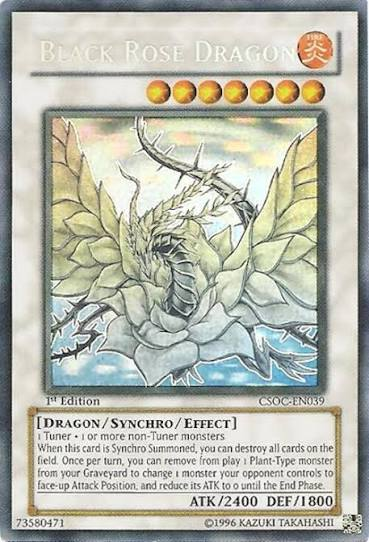

My Card Collection
Here is a small list of cards I own, with a little infomation about it and why I kike it. As well as my faverite card from the game.
| Card | Type | Why I like it |
|---|---|---|
| Dark Magician | Spellcaster / Normal | Classic design and the ultimate wizard in terms of attack and defense. |
| Slifer the Sky Dragon | Divine-Beast / Effect | One of the most recognizable monsters from the animated series. It is 1 of the 3 God cards of the pharaoh. |
| Stardust Dragon | Dragon / Synchro / Effect | Stardust is the main boss monster of the main character from my favirote serie Yu-Gi-Oh! 5D's. |
Favorite Card: Black Rose Dragon

Collection tip
If you are looking into collecting the cards and not play, I recommend buying single's with high rarity. If you want to collect to learn how to play start with buying structure decks.